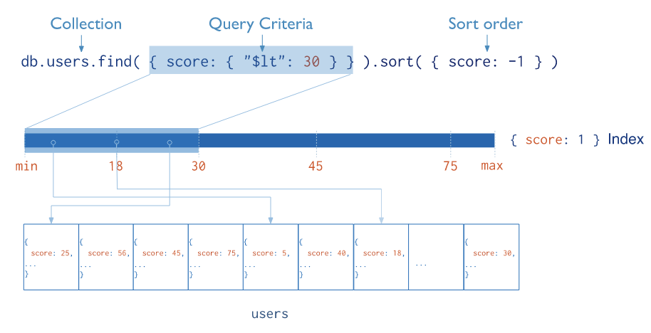
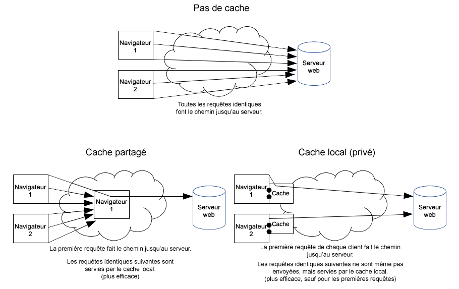
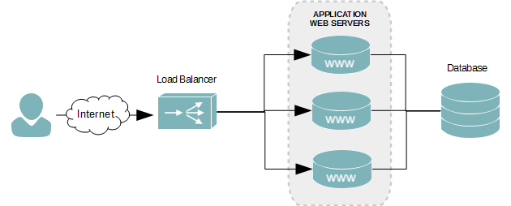

Dans tout ce qu'on a fait jusqu'à présent, on ne s'est pas soucié de la performance.
Comment construire une application et une infrastructure performante ?
A ce jeu, l'optimisation pure du code n'est souvent pas le facteur limitant d'ailleurs, le code se doit avant tout d'être maintenable).
Nous allons regarder différentes façons d'offrir un meilleur service.
Quelle que soit la base de données (SQL ou autre), les index jouent un rôle majeur.
Un index est une structure de données qui permet de naviguer plus rapidement dans les enregistrements. Cette structure prend de la place en plus des données. Ces index doivent évidemment correspondre aux requêtes potentielles de l'application.
Avec mongodb, les index sont un peu plus facile à définir car il n'y a pas de jointure.
Par exemple, pour créer l'index sur les scores :
db.collection.createIndex( { score: -1 } )Pour notre modèle simple et notre petit volume de données, cela n'est pas bien important.
Mais au bout de quelques dizaines de milliers d'entrées, la différence devient sensible.
Imaginons que nous ayons une collection avec des données de la forme
{
"channel": "M6",
"name": "Une pirate de coeur"
"date": ISODate("2019-10-08T23:30:00.000Z")
}Et que je souhaite faire des requêtes du type
db.collection.find( {
channel: "M6",
date: {
$gte: ISODate("2019-10-07T23:30:00.000Z"),
$lt: ISODate("2019-10-09T23:30:00.000Z")
}
})➤ Quel serait le bon index ?
db.collection.createIndex( { channel: 1 } )
db.collection.createIndex( { date: 1 } )
db.collection.createIndex( { channel: 1, date: 1 } )➤ Pourquoi ?
Les headers de réponse permettent d'indiquer la limite de validité d'une réponse.
Ainsi le client aura une indication sur quand revenir chercher la resources
Les headers principaux sont les suivants
Il permet de piloter la mise en cache cote client, par exemple
Cache-Control: no-store
Cache-Control: no-cache, no-store, must-revalidate
Cache-Control: no-cache
Cache-Control: private
Cache-Control: public
Cache-Control: max-age=31536000La durée maximale admise pour le max-age est 1 an.
C'est un identifiant de version du contenu servi : si le contenu change, le ETag change
On peut voir cela comme une valeur de hash
ETag: "33a64df551425fcc55e4d42a148795d9f25f89d4"Lors des requtêtes suivantes, le client pourra rajouter un header If-None-Match
If-None-Match: "33a64df551425fcc55e4d42a148795d9f25f89d4"Si le ETag n'a pas changé, le serveur pourra répondre un code HTTP 304 (Not Modified) sans renvoyer de contenu.
Enfin Vary permet d'indiquer au client que la réponse varie selon certains headers de la requêtes
Par exemple
Vary: User-Agentindique que la réponse est fonction du User-Agent, donc un client mobile et un client web n'aura pas la même réponse.
Ce header est utilisé en conjonction avec un cache externe, ce que l'on va voir par la suite.
Actuellement sur http://localhost:8080/programs les headers de caching ont les valeurs suivantes :
Cache-Control: no-cache, no-store, max-age=0, must-revalidate
Expires: 0
Pragma: no-cachePour faire court, spring (spring security en fait) dit : pas de cache.
➤ Avez vous une idée de pourquoi ?
L'application peut être soumise à une forte charge et peut avoir besoin de la même donnée pour tous les appels.
Ce peut être une base de données, un appel vers un sous service, un calcul coûteux ...
Il est possible de mettre en cache, au sein de l'application, un résultat intermédiaire.
Vu notre application, nous n'allons pas l'implémenter mais encore une fois, spring boot arrive avec une solution clés en main
implementation 'org.springframework.boot:spring-boot-starter-cache'Il faut ensuite de rajouter un @EnableCaching sur notre Application pour activer le support.
Il suffit ensuite de marquer les endroits avec des @Cacheable, @CacheEvict et @CachePut.
Il y quelques compléxités supplémentaires mais une utilisation simple à la forme suivante :
@Cacheable
String getAddress(Customer customer) {...}C'est la solution la plus simple afin de booster le temps de résponse d'une application.
Mais cela fonctionne sous conditions :
Il existe des solutions installables (comme Varnish) et beaucoup en mode CDN (comme Fastly).
Encore une fois, vu la taille de notre application, un caching externe n'est pas nécessaire.
Afin d'augmenter la tenue en charge, il est bien sûr possible de déployer notre application sur plusieurs serveurs.
Le load balancer répartit la charge équitablement entre les serveurs qui hébergent les applications.
Si un serveur tombe, il sort du routage et cela peut être invisible pour un client. On parle de failover et de tolérance à la panne
Pour bien répartir la charge, il est fortement utile que nos applications soient stateless. Sinon, toutes les requêtes venant d'un utilisateur devront toujours arriver sur le même serveur.
Cette capacité à rajouter des serveurs pour augmenter la tenue en charge est appelée scalabilité horizontale (vs la scalabilité verticale qui consiste à rajouter de la pussance aux serveurs existants).
➤ Dans un tel environnement, comment imaginez vous gérer une mise à jour de l'application ?
➤ Comment gérer la mise à jour de la base de données ?
home{kind=link}
{kind=link}
{kind=link}